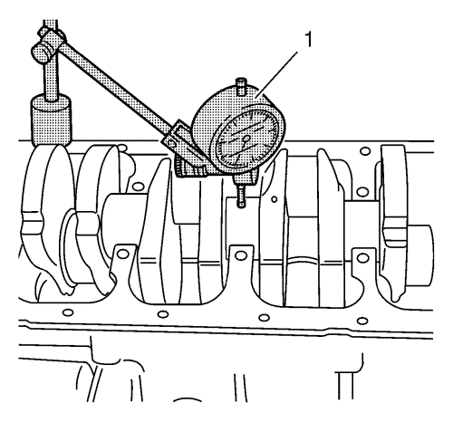
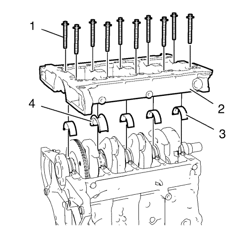

Limpieza y comprobación de cojinetes y cigüeñal
Herramientas especiales
| • | EN-470-B Llave de apriete angular |
| • | GE-571-B Galga de cuadrante |
Si desea informarse sobre herramientas regionales equivalentes, consultar Herramientas especiales .
Comprobación del juego axial del cigüeñal

Nota : Cigüeñal acoplado con sombreretes de cojinete de cigüeñal.
- Monte el manómetro GE-571-B (1).
| • | Monte la herramienta de retención en la parte delantera del bloque motor. |
| • | Coloque la espiga palpadora del comprobador contra el cigüeñal y realice el ajuste. |
- Mida el juego longitudinal del cigüeñal.
| • | Mueva el cigüeñal en la dirección longitudinal. |
| • | Juego final permitido del cigüeñal 0,100–0,202 mm (0,0039–0,0080 pulg.). |
- Desmonte la galga de cuadrante GE-571-B.
Comprobación de la excentricidad del cigüeñal

Nota: Cigüeñal desmontado.
- Introduzca el cigüeñal en el bloque motor.
- Monte el manómetro GE-571-B (1).
| • | Fije la herramienta de retención al bloque motor. |
| • | Coloque la espiga palpadora del comparador en el muñón del cojinete del cigüeñal y realice el ajuste. |
- Compruebe el juego de giro del cigüeñal.
| • | Haga girar el cigüeñal de modo uniforme. |
| • | Máximo juego de giro permitido: 0,03 mm (0,001 pulg.). |
- Desmonte la galga de cuadrante GE-571-B.
Comprobación del juego del cojinete del cigüeñal (con Plastigage)

Nota:
- Coloque el plastigage.
Coloque el plastigage (tira de plástico flexible) alrededor de toda la anchura del muñón del cojinete del cigüeñal (1).

Nota: Los pernos pueden volver a utilizarse para comprobar el juego del cojinete del cigüeñal.
- Monte los 4 cojinetes inferiores del cigüeñal (3) y el cojinete de empuje inferior del cigüeñal (4).
- Monte los tornillos de la placa de sujeción del sombrerete de cojinete del cigüeñal (2).
- Monte los 10 tornillos interiores de la placa de sujeción del sombrerete de cojinete del cigüeñal (1).
Precaución:Consulte Precaución con las fijaciones en la sección Prólogo.

- Apriete los 10 tornillos interiores de la placa de sujeción del sombrerete de cojinete del cigüeñal en la secuencia indicada y en el orden siguiente:
| 5.1. | Apriete los tornillos interiores de la placa de sujeción del sombrerete de cojinete del cigüeñal a 25 N·m (18 lib. pie). |
| 5.2. | Apriete los pernos interiores de la placa de sujeción del sombrerete de cojinete del cigüeñal otros 60°. Utilice la llave EN-470-B. |
| 5.3. | Apriete los pernos interiores de la placa de sujeción del sombrerete de cojinete del cigüeñal otros 15°. Utilice la llave EN-470-B. |
- Desmonte la placa de sujeción del sombrerete de cojinete del cigüeñal con sus tornillos.

Nota: Al leer el valor, no confunda los milímetros con las pulgadas de la escala de medición.
- Mida el juego del cojinete del cigüeñal.
| • | Compare la anchura del hilo de plástico aplastado (flecha) con la escala de medición (1). |
| • | El juego del cojinete del cigüeñal debe ser de 0,007-0,031 mm (0,00028-0,00122 pulg.). |
Comprobación del juego del cojinete del cigüeñal (con micrómetro de interiores)
Nota: Los pernos pueden volver a utilizarse para comprobar el juego del cojinete del cigüeñal.
- Monte y apriete la placa de sujeción del sombrerete de cojinete del cigüeñal y los cojinetes del cigüeñal tal y como se indica arriba.
- Mida el diámetro del cojinete del cigüeñal en 3 puntos.
Mida en las zonas indicadas (1) con un dispositivo de medición interno.
Calcule el diámetro medio del cojinete del cigüeñal.
Fórmula: 1er. resultado + 2º. resultado + 3er. resultado / 3.

- Mida el diámetro del muñón del cojinete de cigüeñal en 2 puntos entre (1) y (3) y entre (2) y (4) con un micrómetro.
- Calcule el diámetro medio del muñón de cojinete del cigüeñal.
Fórmula: 1er. resultado + 2º. resultado / 2.
- Determine el juego del cojinete del cigüeñal.
Fórmula de cálculo: diámetro medio del cojinete del cigüeñal menos diámetro medio del muñón de cojinete del cigüeñal.
- El juego del cojinete del cigüeñal debe ser de 0,007-0,031 mm (0,00028-0,00122 pulg.).
| © Copyright Chevrolet. All rights reserved |